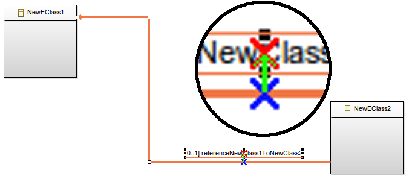
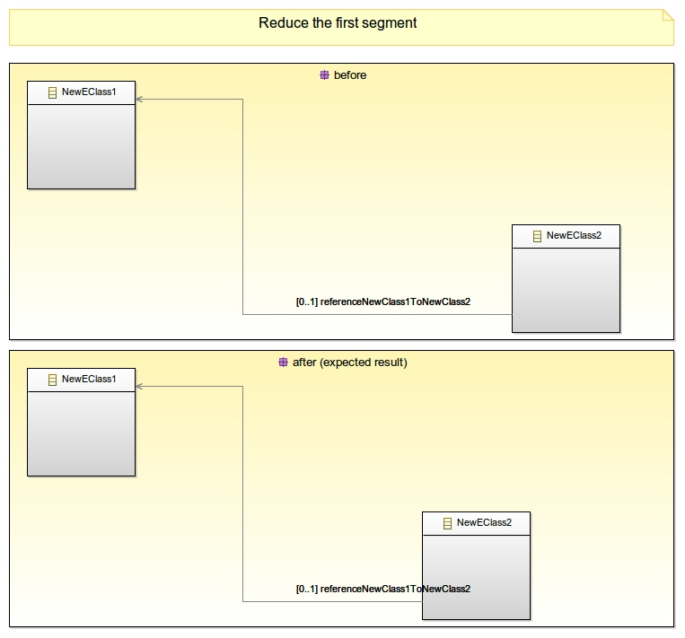
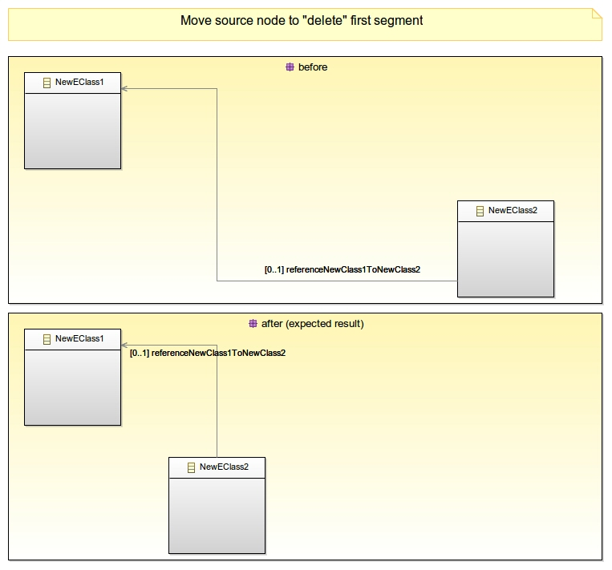
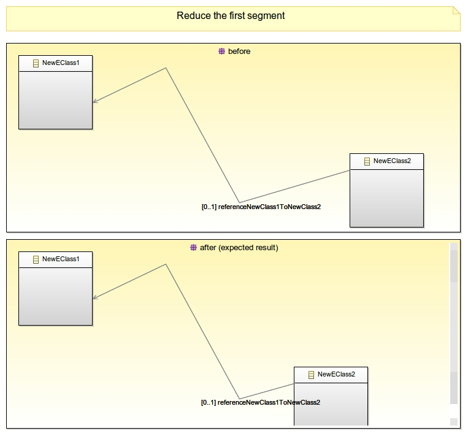

Sirius Evolution Specification: Control the edge label location after the move of its edge
Preamble
Summary: Control the edge label location after the move of its edge.
| Version | Status | Date | Authors | Changes |
|---|
| v0.1 | DRAFT | 2015-04-27 | lredor | Initial version. |
| v0.2 | DRAFT | 2015-04-29 | lredor | Update after team review. |
Relevant tickets :
Introduction
In some conditions, the new location of an edge label after the move of its edge is not natural. The goal of this issue is to always have a new location as natural as possible.. For that, this specification will list all possible cases of edge move, and also explain what is a «natural new location according to its edge move».
Detailed Specification
As a reminder, there are 3 possible labels on an edge (begin label, center label and end label). The rules will be the same for all of these.
Current behavior
Even if in some conditions, the label move is not natural, the label location is based on a specific algorithm. This chapter explains the current logic.
The label location is conditioned by 2 constraints:
- The reference point on the edge:
- start: The reference point is at 15% of the edge length
- middle: The reference point is at 50% of the edge length
- end: The reference point is at 85% of the edge length

This values can be found in org.eclipse.draw2d.ConnectionLocator and org.eclipse.gmf.runtime.diagram.ui.internal.util.LabelViewConstants. This value is fixed by the EditPart that handles this figure (org.eclipse.sirius.diagram.ui.internal.edit.parts.DEdgeNameEditPart.getKeyPoint(), org.eclipse.sirius.diagram.ui.internal.edit.parts.DEdgeBeginNameEditPart.getKeyPoint() or org.eclipse.sirius.diagram.ui.internal.edit.parts.DEdgeEndNameEditPart.getKeyPoint()).
- Its offset (the
layoutConstraint of the label in the GMF model): Corresponds to the blue arrow in the below screenshot. This value is modified when the user moves the label. It is interpreted differently according to the orientation, vertical or horizontal, of the segment where the reference point is.

The only difference between the 2 edges, above and below is that the third segment has been moved upward. The middle of the edge (the reference point represented by a red cross) has been indirectly moved. It is on a segment which have changed of orientation. The effect is that the offset is considered differently and is rotated of -90°. For end user, the new label location is not natural.

Move cases
There are several ways to move an edge. All kind of move have, as result, to also move the label. All these kind of moves are listed here to be sure to handle all cases:
- Edge changes:
- Move a segment: click on a point of a segment and move it. A horizontal segment can be moved upward or downward. A vertical segment can be moved leftward or rightward.
- Move a bendpoint: click on a bendpoint and move it. This moves 2 segments of an edge simultaneously.
- A sub-case is when this move change the number of segments.
- Move the first bendpoint: click on the first bendpoint and move it on the source node.
- Move the last bendpoint: click on the last bendpoint and move it on the target node.
- Node changes:
- Move the source node: click on the source node and move it.
- A sub-case is when this move change the number of segments.
- Move the target node: click on the target node and move it.
- A sub-case is when this move change the number of segments.
- Resize the source node: click on a border of the source node and resize it.
- A sub-case is when this resize change the number of segments.
- Resize the target node: click on a border of the target node and resize it.
- A sub-case is when this resize change the number of segments.
- All above operations but on a container that contains the source node (border or not) and the target node. The resize/move of the container must move the source or the target to be interesting.
New logic

1- Consider the center of the label: the red cross on the screenshot
2- Found the point, on the edge that is the closest from the center of the label: the blue cross on the screenshot. This point is considered as the new reference point (and no longer the start, middle or end point). If there are several closest points (same distance), the firstly found is used.
3- The vector, the green arrow, between this reference point and the center of the label must keep the same, if possible.
The step 3 is «simple» to explain, but there are several cases, that need more details, explained below.
Possible cases for rectilinear routing
This chapter list different cases of edges moves, with the expected result on the label location for edge with rectilinear routing.
- A- The reference point is on a segment that is not impacted by the move --> The label does not move.

- B- The reference point is on a segment that is moved (not resized) --> The label is moved with the same delta (to keep the same vector).

- B'- The reference point is on a segment that is moved (and resized) --> The label is moved with the same delta (to keep the same vector).

- C- The reference point is on a segment that is resized: enlarged and the reference point is always on the segment --> The label does not move.

- D- The reference point is on a segment that is resized: reduced and the reference point is always on the segment --> The label does not move.

- E- The reference point is on a segment that is resized: reduced (and perhaps moved) and the reference point is no longer on the segment --> A new reference point is computed by keeping the same ratio of the original reference point according to the length of the segment.

- F- The reference point is on a segment that is removed --> Compute a new location according to the default reference point (start, middle, end).

- G – The reference point is on a segment that is removed but merged with another one --> The label is moved with the same delta (to keep the same vector).

Tree routing
Tree routing is similar to rectilinear routing. The behavior of label on edges with tree routing is out of scope for this spec. Even, if it will probably enhanced by this feature.
Only some manual tests will be done to evaluate remaining problems on tree routing cases.
Possible cases for oblique routing
This chapter list different cases of edges moves, with the expected result on the label location for edge with oblique routing.
- A- The reference point is on a segment that is not impacted by the move --> The label does not move.

- B- The reference point is on a segment that is moved (the starting or ending point of the segment is moved) --> The label is moved to keep the same vector between reference point and label center.

- C- The reference point is on a segment that is resized: enlarged and the reference point is always on the segment --> The label does not move. This case is difficult to have with the oblique routing. The case B will be more frequent.

- D- The reference point is on a segment that is resized: reduced and the reference point is always on the segment --> The label does not move. This case is difficult to have with the oblique routing. The case B will be more frequent.

- E- The reference point is on a segment that is resized: reduced and the reference point is no longer on the segment --> A new reference point is computed by keeping the same ratio of the original reference point according to the length of the segment.

- F- The reference point is on a segment that is removed --> Compute a new location according to the default reference point (start, middle, end). The example is here with an oblique edge. All corresponding cases with a rectilinear edge match the above case that is better.

- G – The reference point is on a segment that is splitted into two segments --> Compute a new location according to the default reference point (start, middle, end).

Specific sequence diagram case
SequenceMessageLabelLocator
The sequence diagrams have a specific LabelLocator for sequence message (org.eclipse.sirius.diagram.sequence.ui.tool.internal.figure.SequenceMessageLabelLocator). This label locator inverses the offset of the label according to the direction of the message.
So this particular case must be checked.
Pack Layout
There is a pack capability on sequence diagram, second parameter of org.eclipse.sirius.diagram.sequence.business.internal.operation.SynchronizeGraphicalOrderingOperation.SynchronizeGraphicalOrderingOperation(Diagram, boolean). It this context, the label should be reset to its original location (as if it had just been created).
Bracket edge
The bracket edges have a specific router, org.eclipse.sirius.diagram.ui.tools.internal.routers.BracketConnectionRouter. But the rules should be the same as edge with rectilinear router.
Only tests on these specific edges should be done to ensure it is OK.
Technical details about new implementation
There are 2 approaches:
- Recompute the offset stored in the GMF notation model in each policy implied in the move of an edge
- Recompute the offset in pre-commit listener by detecting the changes (bendpoints, source anchor, target anchor, ...)
First approach:
- advantages
- Direct access to the query and all associated data (delta of move, ...)
- Direct access to the implied edit parts of so figures
- disadvantages
Second approach:
- advantages
- disadvantages
- Detecting of «interesting» notifications can be costly (precommit called at each command execution)
- Retrieving of data potentially difficult from list of notifications
- Potential errors of computing due to lack of information in GMF model
- Specificity of router only known by Draw2D
- Bad computation of source node or target node in auto-size, implying bad computation of bendpoints.
The first approach has been retained. Indeed, the only disadvantage is to be exhaustive in all possible actions, and so on policies, that can move an edge. But this is more reliable, that the second, in which it is possible to have unexpected result.
List of actions considered as potentially impacting for edge:
- Move source/target node (manual move, align actions, distribute actions)
- Resize source/target node (manual resize, auto-size action, make same size action)
- Move container of the source/target node
- Resize source/target node (with or without F3 shortcut)
- Move a segment of an edge
- Move the first/last bendpoint of an edge
- Move the intermediate bendpoint of an edge
- Create a new intermediate bendpoint
- Delete an intermediate bendpoint
- Arrange all/selection
- Remove bendpoints action on an edge
All these actions will be handled for this feature (potential missed actions not listed here, will not be handled). The corresponding policies are not listed here. This will be done during the implementation phase.
Backward Compatibility and Migration Paths
There is no change in metamodel for this evolution. It only modifies the existing policies.
User Interface Changes
No user interface change.
Documentation Changes
This new behavior should be added in the New and Noteworthy documentation. There is no need to document this elsewhere because it will be the default behavior.
Tests and Non-regression strategy
All cases described for rectilinear router and oblique router must be tested.
Also all actions tested in «Technical details» chapter must be tested.
As often for graphical feature, the cases of different zoom level, and diagram and container with scroll must be tested.
Implementation choices and tradeoffs
There is another possible feature link to this one: Action to reset a label to its default location (as just after creation). This action is out of scope for this feature.